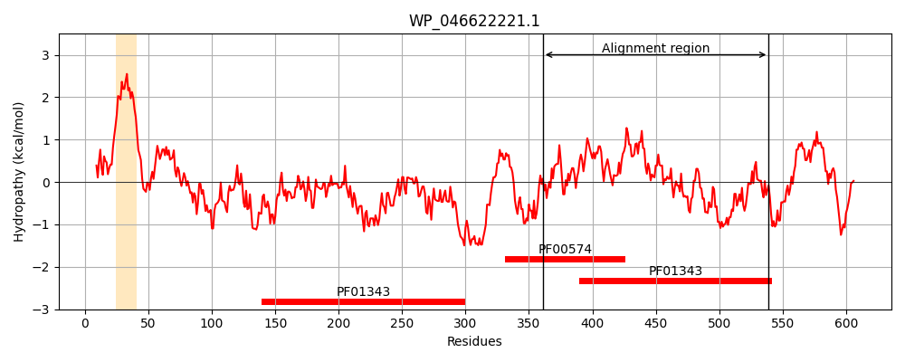
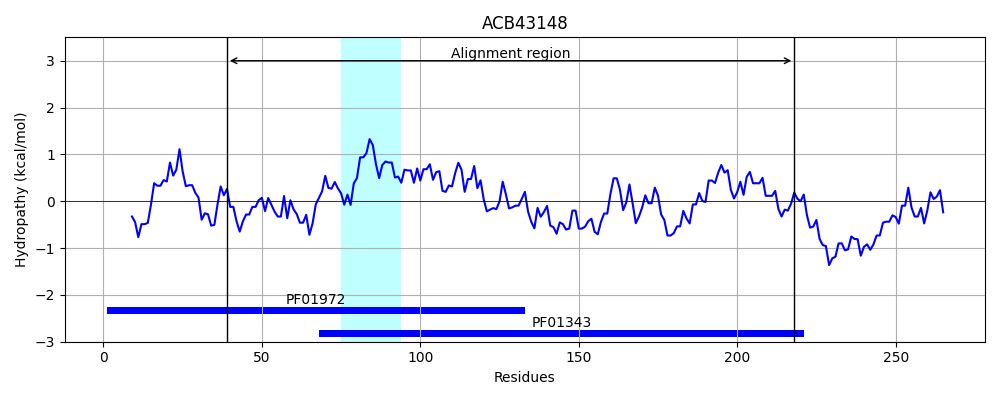
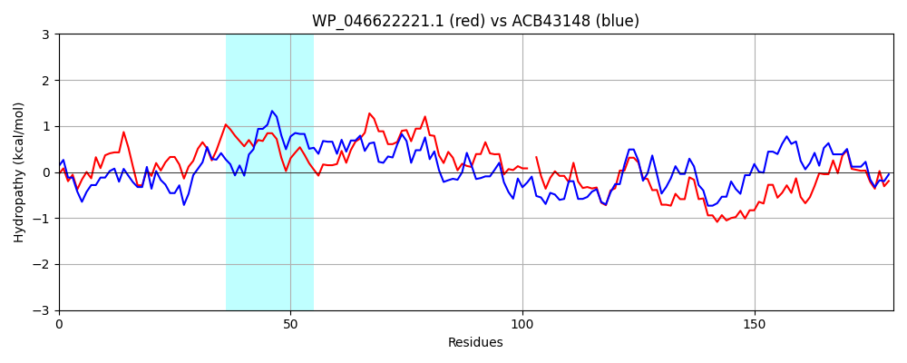

Hit Accession: ACB43148
Hit TCID: 8.A.21.2.7
Hit Description: gnl|BL_ORD_ID|1043 gnl|TC-DB|ACB43148.1|8.A.21.2.7 signal peptide peptidase SppA (protease IV) (chromatophore) [Paulinella chromatophora]
Mach Len: 180
e:0.000000
Query TMS Count : 1
Hit TMS Count: 1
TMS-Overlap Score: 0.000000
Predicted Substrates:CHEBI:14911;protein
BLAST Alignment:
Score: 269 , Bit scores: 108 bits, E-value: 3.0e-26, Alignment length: 180, Percentage identity: 34
Query: 361 DPKIKAIVLRVNSPGGSVTASEIIREELAAAKAAGKPVVVSMGGMAASGGYWISTPADYIVANPSTLTGSIGIFGVINTVENTLGSIGVHTDGVATSPLADV-SSTKALPPEVQQLMQLSIENGYQRFITLVANARKSTPEKIDQIAQGHVWTGEDAKANGLVDSLGDFDDAVAKAAELA 539
+ ++ I+LR++SPGG+V S+ I L + G VV S G ++ASGG +I AD IV+NP T+TGSIG+ N + L IG+ + + + D+ S +AL P + ++Q I++ Y +F+ +A R + + G +++G A GLVD+LGD + A+ ++LA
Sbjct: 39 EQRMSGILLRIDSPGGTVGDSQEIHAALLRLRNKGCKVVASFGNISASGGVYIGVAADKIVSNPGTITGSIGVVLRGNNLAKLLERIGIRFETIKSGIYKDILSPDRALSPAERNVLQDLIDSSYNQFVAAIAQGRGLKESFVREFGDGRIFSGAQALDLGLVDALGDEETALQLLSQLA 218 | Protein Hydropathy Plots: |
|---|
|  |  |
Pairwise Alignment-Hydropathy Plot:
|
|---|
|  |